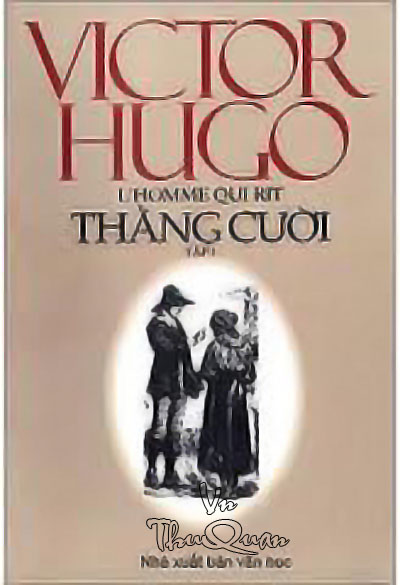

« Back
Thằng Cười
By Victor Hugo

Lời Giới Thiệu
HAI CHƯƠNG MỞ ĐẦU
I. TRỜI ĐÊM KHÔNG ĐEN TỐI BẰNG LÒNG NGƯỜI
IIA. THUYỀN CON TRÊN BIỂN CẢ.
IIB. THUYỀN CON TRÊN BIỂN CẢ.
IIIA. EM BÉ TRONG BÓNG TỐI
IIIB. EM BÉ TRONG BÓNG TỐI
P2.IA. QUÁ KHỨ LUÔN LUÔN CÓ MẶT, CON NGƯỜI PHẢN ẢNH CON NGƯỜI.
P2.IB. QUÁ KHỨ LUÔN LUÔN CÓ MẶT, CON NGƯỜI PHẢN ẢNH CON NGƯỜI.
P2.IC. QUÁ KHỨ LUÔN LUÔN CÓ MẶT, CON NGƯỜI PHẢN ẢNH CON NGƯỜI.
P2.ID. QUÁ KHỨ LUÔN LUÔN CÓ MẶT, CON NGƯỜI PHẢN ẢNH CON NGƯỜI.
P2.IE. QUÁ KHỨ LUÔN LUÔN CÓ MẶT, CON NGƯỜI PHẢN ẢNH CON NGƯỜI.
P2.IIA. GUYNPLÊN VÀ ĐÊA
P2.IIB. GUYNPLÊN VÀ ĐÊA
P3.IA.BẮT ĐẦU RẠN NỨT
P3.IB.BẮT ĐẦU RẠN NỨT
P4.HẦM HÌNH SỰ.
P5.BIỂN CẢ VÀ SỐ PHẬN CÙNG RUNG CHUYỂN TRƯỚC MỘT CƠN GIÓ
P6. NHỮNG BỘ MẶT KHÁC NHAU CỦA UYÊCXUYT
P7. TITĂNG[101]
P8. CAPITÔN[130] VÀ VÙNG PHỤ CẬN.
P9. SỤP ĐỔ
Phần Kết : BIỂN CẢ VÀ TRỜI ĐÊM